Introduction au Deep Learning

Sommaire
- IA, Machine Learning et Deep Learning
- Python et la Data Science
- Les réseaux de neurones
- Premiers pas avec Keras
- Paramétrage et optimisation d'un réseau
IA, Machine Learning et Deep Learning

Intelligence artificielle
"L'IA consiste à parvenir à faire faire aux machines ce que l’homme fait aujourd’hui mieux qu’elles, notamment s’adapter, apprendre, communiquer et interagir d’une manière riche et variée avec leur environnement."(Source : #FranceIA)
De nombreux domaines d'étude
- Logique et raisonnement
- Bases de connaissances, Web sémantique
- Apprentissage automatique
- Traitement du langage naturel
- Robotique
- Sciences cognitives
- Aide à la décision
- ...
(Source : INRIA)
Une histoire jeune et mouvementée
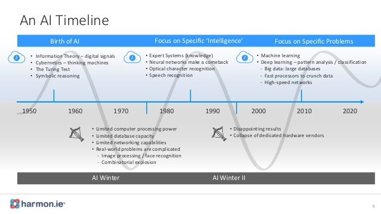L'été, jusqu'à quand ?

Machine Learning
(Apprentissage automatique)Ensemble de techniques permettant à des machines de s’entraîner sur des bases d’exemples, d’en faire émerger des traits, de généraliser sur des exemples non encore rencontrés et de s'améliorer continuellement avec l’expérience.
Un nouveau paradigme

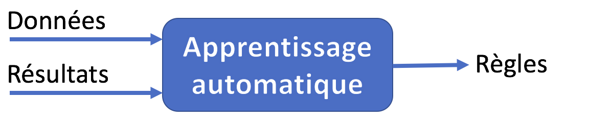

Apprentissage supervisé
Les résultats à obtenir sont fournis avec les données d'entraînement.
Ces données sont dites structurées (étiquetées).
Régression
Le système prédit des valeurs continues.

Classification
Le système prédit des valeurs discrètes : il catégorise les entrées.

Apprentissage non supervisé
Le système doit découvrir par lui-même une éventuelle structure dans les données fournies.
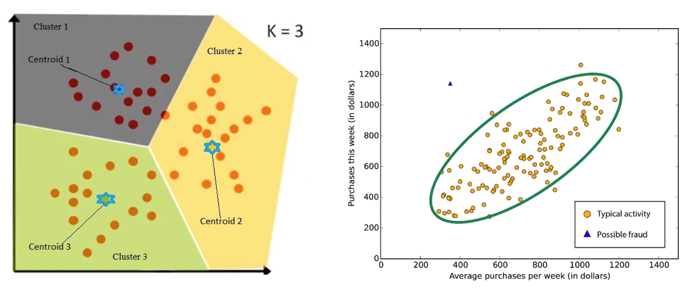Apprentissage par renforcement
Les décisions du système lui procurent une récompense qu'il cherche à maximiser.
Deep Learning
(Appprentissage profond)Ensemble de techniques d’apprentissage automatique dans lesquels de vastes réseaux de neurones artificiels exploitent de grandes quantités de données.
A l'origine de la majorité des avancées récentes en IA.
Reconnaissance visuelle
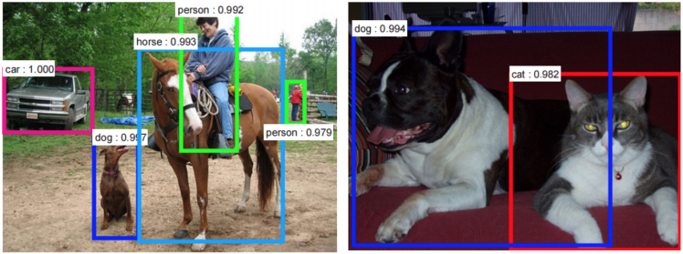Compréhension de la parole
Véhicules autonomes
Algorithmes de recommandation

Jeux complexes
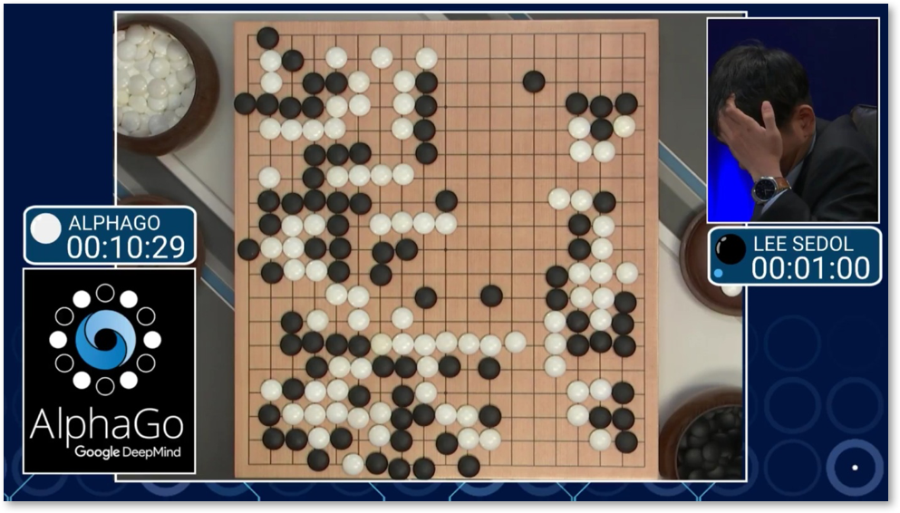Les clés du succès
- L'optimisation d'algorithmes connus depuis les années 1980
- L'augmentation de la puissance de calcul des machines
- L'explosion du volume de données disponibles
L'état de l'art au début des années 1990


Python et la Data Science
Le langage Python
Langage de programmation sous licence libre créé en 1989 par Guido van Rossum.
- Multi-paradigmes (procédural, fonctionnel, objet)
- Typage dynamique
- Gestion automatique de la mémoire
Python, le standard pour la Data Science
- Qualités du langage (logique, simplicité, souplesse)
- Implication de la communauté scientifique et universitaire
- Existence de nombreuses bibliothèques dédiées
En pratique
Python For Data ScienceLes réseaux de neurones
Les origines
- 1943 : premier modèle mathématique du neurone biologique (McCulloch et Pitts)
- 1949 : règle de Hebb
- 1958 : le perceptron (F. Rosenblatt)
- 1969 : limites des perceptrons (M. Minsky)
L'inspiration biologique

Le neurone formel de McCulloch et Pitts

La règle de Hebb
Postulat sur l'importance des synapses entre neurones pour l'apprentissage.
Quand un axone d'une cellule A est assez proche pour exciter une cellule B de manière répétée et persistante, une croissance ou des changements métaboliques prennent place dans l'une ou les deux cellules ce qui entraîne une augmentation de l'efficacité de A comme cellule stimulant B.
Le perceptron de Franck Rosenblatt

Algorithme d'apprentissage du perceptron
- Initialiser aléatoirement les poids des connexions
- Pour chaque donnée de test :
- Calculer la sortie du perceptron
- Si la sortie calculée diffère de celle attendue :
- Si 0 au lieu de 1, diminuer les poids ayant 1 comme valeur d'entrée
- Si 1 au lieu de 0, augmenter les poids ayant 1 comme valeur d'entrée
Multi Layer Perceptron (MLP)

La critique de Minsky
- Un seul perceptron ne peut pas apprendre une fonction non séparable linéairement
- Aucun algorithme d'apprentissage ne fonctionne pour les couches cachées d'un MLP
Des progrès décisifs
- 1974 : technique de la rétropropagation (P. Werbos)
- 1986 : apprentissage par rétropropagation (Rumelhart, Hinton, Williams)
- 1989 : preuve mathématique de la capacité des réseaux de neurones à approximer toute fonction mesurable (Hornik, Stinchcombe, White)
- 1989 : début des travaux sur les réseaux convolutifs profonds (Y. LeCun, Y. Bengio)
Les prémisses de la reconnaissance visuelle
L'avènement du Deep Learning
- 2012 : AlexNet (Krizhevsky, Sutskever, Hinton) remporte la compétition ImageNet
- 2016 : AlphaGo (DeepMind) bat le champion de Go Lee Sedol par 4 victoires à 1
- 2017 : AlphaZero atteint en 24h un niveau surhumain au Go et aux échecs
Apprentissage supervisé
-
Classification binaire (0 ou 1)
Chat/non chat, spam/non spam, maligne/bénigne -
Classification multiclasses
Chat/chien/autre animal, reconnaissance de chiffres, catégorisation de tweets -
Régression
Prix d'un bien immobilier, prévision de températures, âge d'une personne
Anatomie d'un réseau
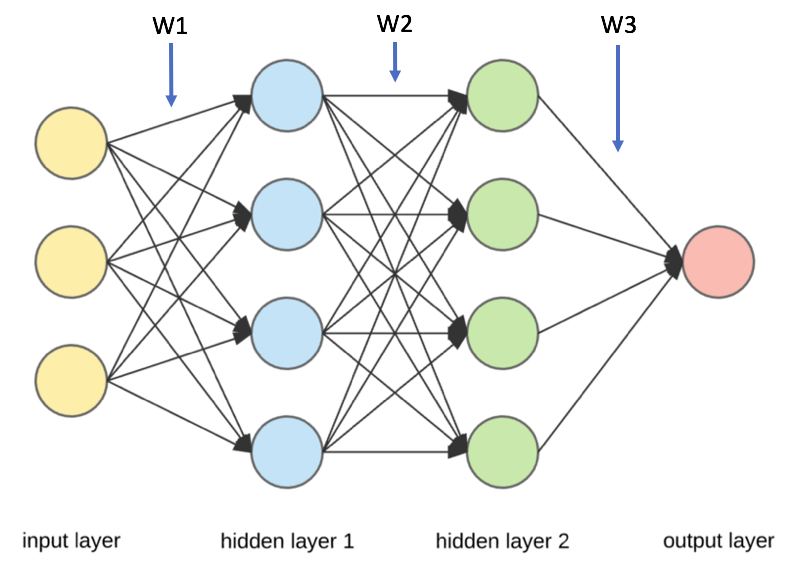Algorithme d'apprentissage
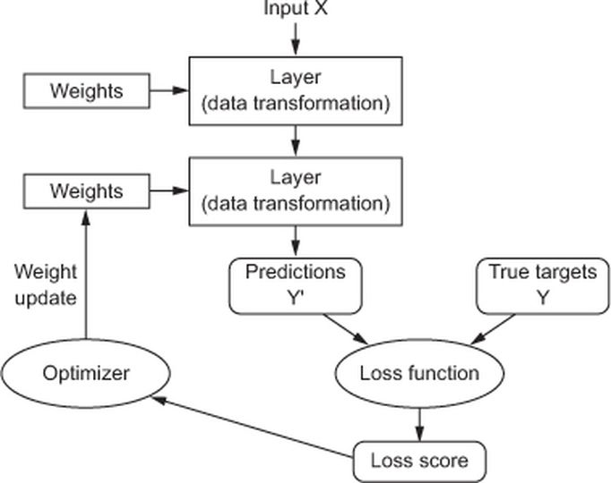Entrainement et inférence
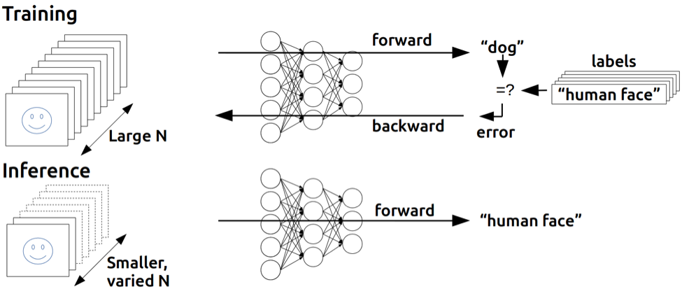Format des données d'entrée
- Cas général : matrice de la forme (samples, features)
- Images : tenseur 4D de la forme (samples, height, width, color_channels)
- Vidéos : tenseur 5D de la forme (samples, frames, height, width, color_channels)
Exemple : prix immobiliers
| Surface (m2) | Nombre chambres | Age (années) | Code Postal | Prix (k€) |
|---|---|---|---|---|
| 145 | 6 | 32 | 33600 | 380 |
| 85 | 3 | 45 | 33700 | 290 |
| 210 | 7 | 12 | 33400 | 740 |
| ... | ... | ... | ... | ... |
| 110 | 4 | 22 | 33000 | 410 |
Exemple : prix immobiliers
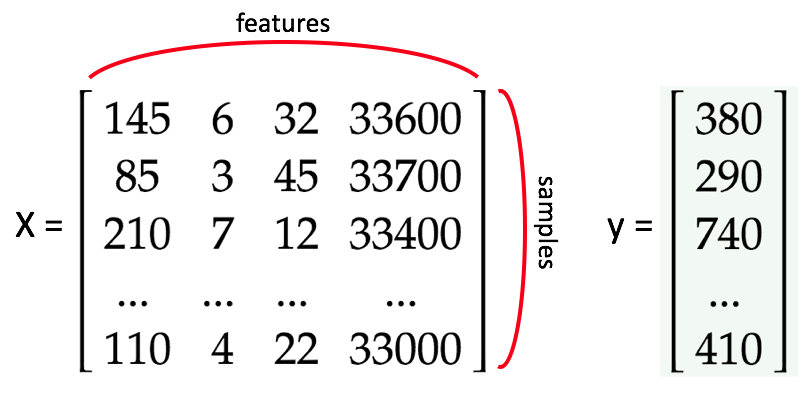Exemple : image RGB
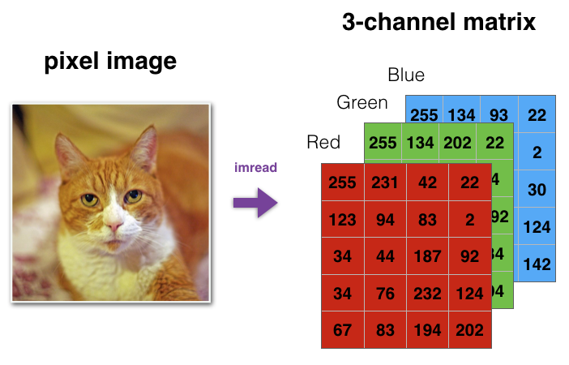Sortie pour un neurone
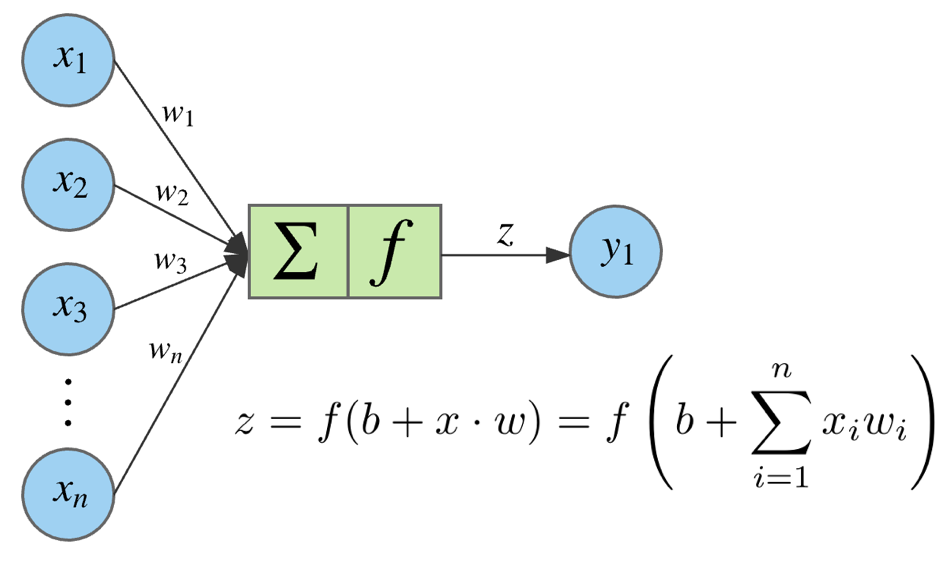Les fonctions d'activation
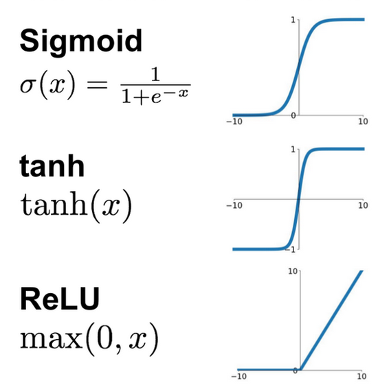Vectorisation des calculs

Sortie de la couche 1

Sortie de la couche 2

Sortie de la couche 3

La fonction de coût (loss)
- Mesure l'écart entre les résultats attendus et calculés
- Paramètres : les poids du réseau
- Dépend du type d'apprentissage
Exemples de fonctions
-
Binary crossentropy
\(\mathcal{J}(\theta)= -\frac{1}{m}\sum_{i=1}^m \left[y_i \log(y'_i) + (1-y_i) \log(1-y'_i)\right]\) -
Categorical crossentropy
\(\mathcal{J}(\theta)= -\frac{1}{m}\sum_{i=1}^m\sum_{j=1}^n y_{ij} \log(y'_{ij})\) -
Mean Squared Error
\(\mathcal{J}(\theta)= \frac{1}{m}\sum_{i=1}^m (y'_{i} - y_{i})^2\)
Ajustement des poids du réseau
Objectif : minimiser la fonction de coût
Principe : mettre à jour les poids par petites étapes dans la direction inverse du gradient de la fonction de coût
La notion de gradient
Variation d'une fonction par rapport à la variation de ses différents paramètres
Vecteur dont les composantes sont les dérivées partielles de la fonction
Descente de gradient

Gradient 2D
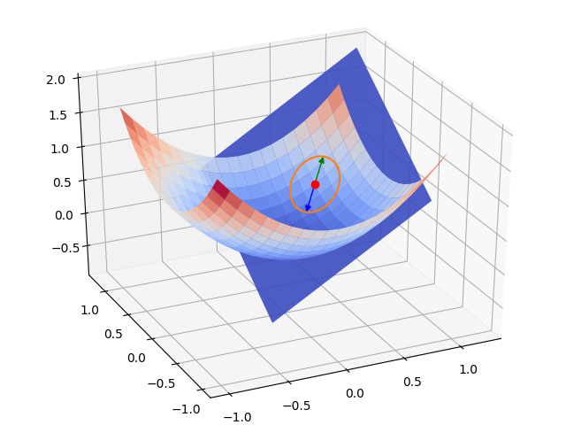Descente de gradient 2D

La rétropropagation
Objectif : calculer le gradient de la fonction de coût par rapport à ses paramètres (les poids du réseau)
Principe : appliquer la règle des dérivations en chaîne ou chain rule pour calculer les dérivées partielles de la fonction de coût
$$\frac{dy}{dx} = \frac{dy}{du} \cdot \frac{du}{dx}$$Optimisation de la descente de gradient
Learning rate \(\alpha\) : facteur d'ajustement des poids en fonction du gradient du coût
$$\theta_{i+1} = \theta_i - \alpha \frac{\partial}{\partial \theta} \mathcal{J}(\theta_i)$$Importance du learning rate

Le problème des minima locaux
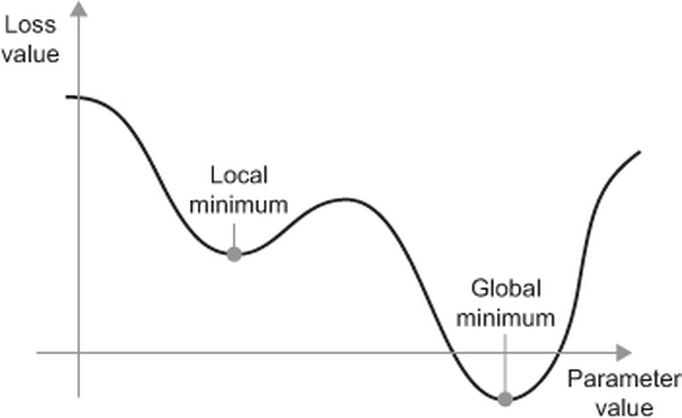Quelques méthodes d'optimisation
- Stochastic Gradient Descent
- Mini-batch Gradient Descent (entre 50 et 256 samples)
- Momentum
- RMSProp
- Adam
Mesure de performance
Accuracy: % de réussite des prévisions sur un jeu de données
En pratique
Shallow Neural Networks With PythonPremiers pas avec Keras
Présentation de Keras
Librairie Python de création de réseaux de neurones conçue par François Chollet
Fournit une API de haut niveau au-dessus de TensorFlow, Theano ou CNTK
Un premier exemple
from keras.models import Sequential
from keras.layers import Dense
model = Sequential()
model.add(Dense(4, activation='tanh'), input_shape=(3,))
model.add(Dense(4, activation='tanh'))
model.add(Dense(1, activation='sigmoid'))
network.compile(optimizer='rmsprop',
loss='binary_crossentropy',
metrics=['accuracy'])
history = model.fit(train_X, train_y, epochs=5, batch_size=64)
loss, acc = model.evaluate(test_X, test_y, verbose=0)
Définition du réseau
# Sequential defines a linear stack of layers
from keras.models import Sequential
# Dense defines a fully connected layer
from keras.layers import Dense
model = Sequential() # Create a new network
# Add a 4-neurons layer using tanh as activation function
# Input shape corresponds to the input layer (no of features)
model.add(Dense(4, activation='tanh'), input_shape=(3,))
# Add a 4-neurons layer using tanh
# Input shape is infered from previous layer
model.add(Dense(4, activation='tanh'))
# Add a 1-neuron output layer using sigmoid
model.add(Dense(1, activation='sigmoid'))
Réseau obtenu
Compilation du réseau
# Configuration of the training process
# optimizer: gradient descent optimization method
# loss: loss function
# metrics: list of metrics monitored during training and testing
network.compile(optimizer='rmsprop',
loss='binary_crossentropy',
metrics=['accuracy'])
Apprentissage
# Launch the training of the network on the data
# epochs: number of epochs to train the model
# (An epoch is an iteration over the entire training dataset)
# batch_size: number of samples used at each training iteration
# The returned history object contains the monitored metrics
history = model.fit(train_X, train_y, epochs=5, batch_size=64)
Evaluation
# Returns the loss value & metrics values for the network in test mode
loss, acc = model.evaluate(test_X, test_y, verbose=0)